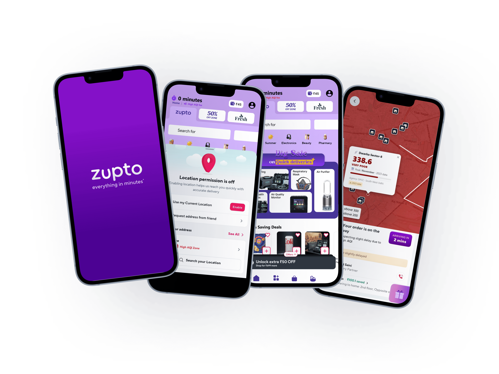
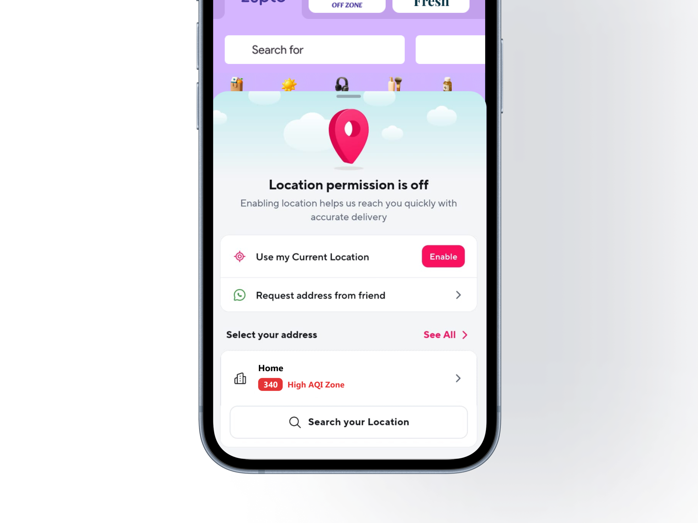
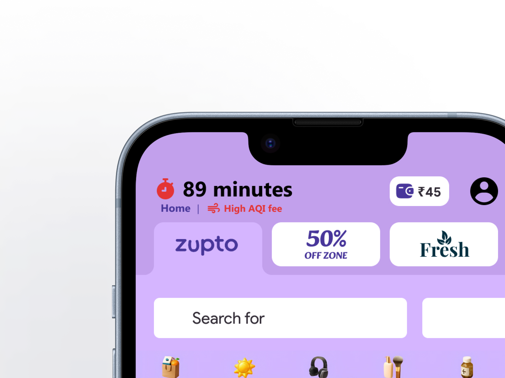
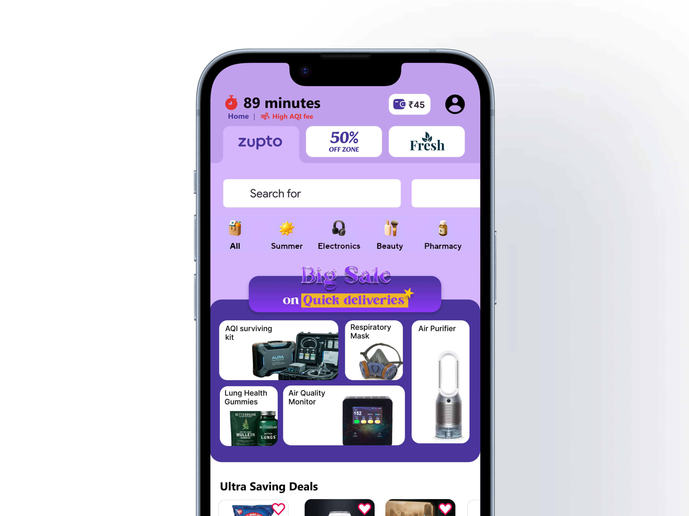
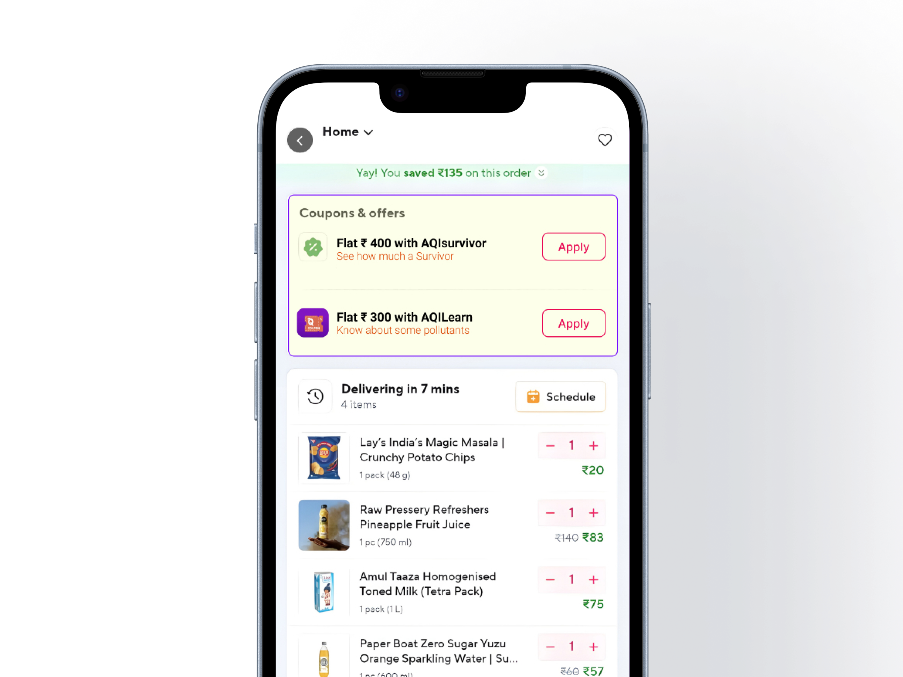
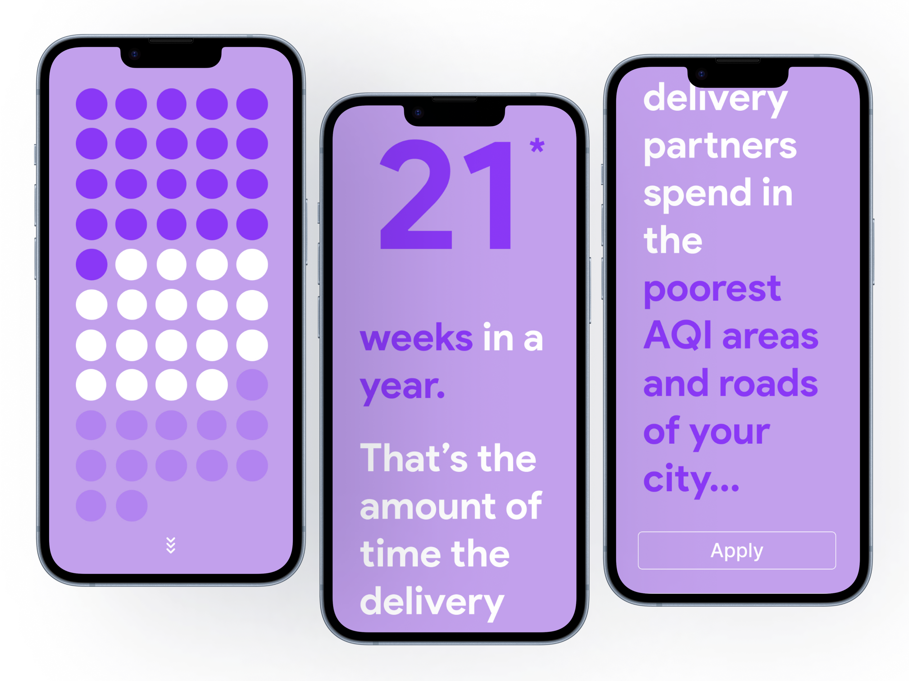
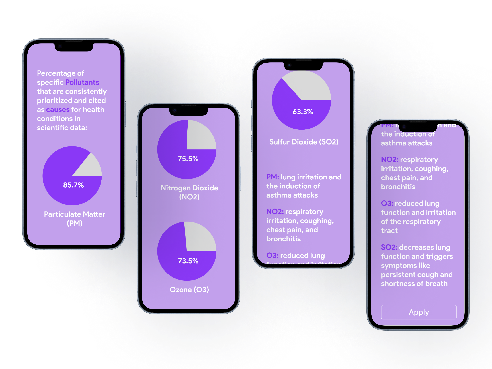

an average gig worker spends 8 to 12 hours a day outside — exposed, on a two-wheeler, breathing whatever the city is breathing. and in delhi, what the city is breathing is the worst air in the world.
the government knows. the companies know. but they have no reason to move until the people who use these apps start asking questions.
so we targeted users — not because they are the most guilty, but because they are the most powerful. these companies exist to serve them. if users become aware and uncomfortable, the companies have no choice but to respond.
we chose a dummy app as the medium because it's the easiest thing to onboard someone into. they think they know what they're doing. that assumption is the bait. the guilt trip comes after.
it came out as two things: a map, and a provocation.
we pulled data from CPCB's AQI monitoring stations and mapped it against the locations of dark stores across delhi — the warehouses gig workers spend most of their time around, picking up and dropping off orders.
the finding was uncomfortable: most dark stores sit in the most crowded parts of the city. crowded areas drive more demand, more demand means more dark stores, more dark stores mean more congestion — and more pollution.
the map takes about 40 datasets, picks the highest aqi month (november) and shows it as one continuous colour field.
first we divided zones with voronoi diagrams — every location went to its nearest monitoring station, so each boundary sat exactly halfway between two stations. but air doesn't stop at a border. so as a last step we switched to a heatmap, which is a better way to show anything in the air.
november's peak: 300–380, very poor. the yearly average said 180.
that's the air a rider breathes for 8 to 12 hours, every winter, every day.
we replicated zepto's UI exactly — same layout, same visual language, same checkout flow.

but at every stage of the app, something is slightly different.

the address selection screen shows you the aqi of your delivery zone. most users don't know what kind of air they're living inside — this puts it in front of them, unavoidably.


your delivery time is not 10 minutes. it's hours — because in a high aqi zone, your rider is taking a longer route to avoid the most polluted corridors. you can bring that time down, but only if you purchase protective equipment for the rider.

tapping a coupon doesn't give you a discount. one shows how many hours a rider is exposed to toxic air in a year. the other opens infographics on airborne diseases — scientifically documented, unglamorous, real. nobody wants to read it. that's the point.


before you place your order, there's one more thing on the bill. a health tax — ₹29 on average. but it doesn't sit as one number. it explodes into a long scroll — every disease a rider is likely developing from years of breathing delhi's air, each one assigned a fraction of the rupee. PM2.5. benzene. carbon monoxide. the diseases they cause. you have to scroll through all of it to place your order.
health tax: ₹29 on average. you scroll the whole list to pay it.
it's not accurate. it was never meant to be. the point is the scroll — the weight of the list, the realisation that ₹29 cannot actually cover any of this.